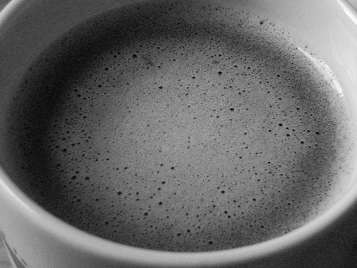
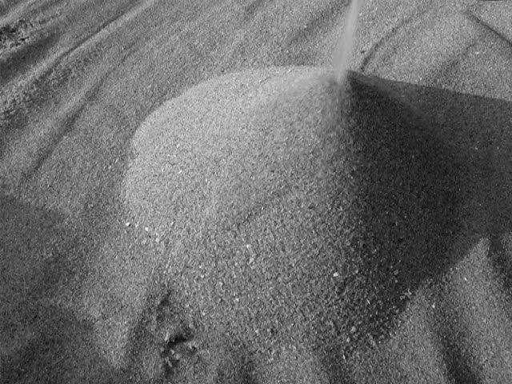
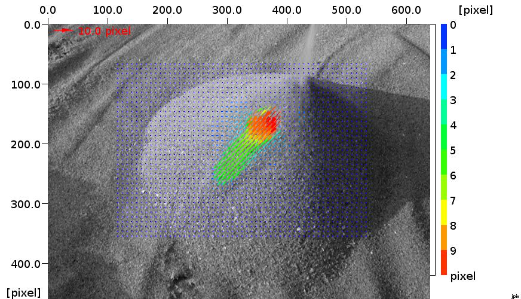
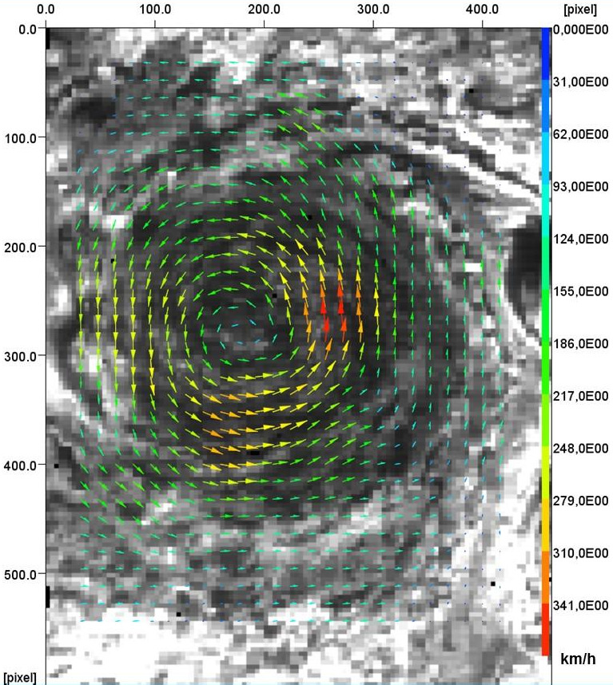

home
download
introduction
quick start
how to
reference
scripting
javadoc
repository
troubleshooting
You never heard of Particle Image Velocimetry (PIV) before, but want to get some hands-on experience? Yes, you can - after reading this most simple introduction. Just skip it, when you know PIV.
PIV is an optical technique for measuring the displacement of particle pattern. PIV ist mostly used for flow velocity measurements. In contrast to many other techniques, that measure the velocity of a single point, PIV provides information about the two dimensional velocity distribution, or more precise, about the distribution of two cartesian velocity components parallel to a measurement plane. There are specialized set-ups that measure three cartesian components in a plane (e.g. Stereo-PIV) or even three components in space (e.g. Tomographic PIV, Holographic PIV). Because it is an optical technique, the fluid flow is usually not disturbed by a measurement probe.
The movement of a gas or a liquid is visualized by adding small tracer particles to the flow. With a digital camera, the position of the particles is captured at least twice, with a little time lag between the images. A computer programm like JPIV is used for tracking the movement of the particles based on cross-correlation, and to visualize the result.
A simple desk-top experiment, that can easily be reproduced, is the visualization of the thin, foamy layer on a cup of coffee that had just been stirred. The series function of a digital compact camera is used to take two consecutive photos, as shown below.

Two consecutive images of a cup of coffee after stirring.
JPIV searches corresponding particle patterns (here: groups of bubbles) in both images, using cross-correlation. The position of two corresponding patterns in the images indicate the direction and the magnitude of the pattern displacement and can be represented by a small arrow. The result is shown in the next figure. Vectors indicate the direction of the movement, the color-coding and the vector-length represent the magnitude of the displacement. The blue overlay is an interpolated particle displacement profile.

PIV in a cup of coffee. Click on the image to see an enlargement.
The velocity profile immediately reveals the linear velocity distribution in the center (solid body rotation), a fixed layer of foam along the rim of the mug, and a narrow band of strong shear between those regions. The arrows within the shear region also show that there is an outward migration of bubbles in this area.
You got the point - now we can start complaining, why this is rather a sloppy visualization and not a real PIV measurement:
It is discouraging, but there are a few more issues to be aware of. I recommend the following literature to get an overview:

This little beach-avalanche was evaluated using two evaluation passes, a constant evaluation window size of 32 pixel and a vector spacing of 8 pixel.
This is the raw PIV visualization result. Between the two evaluation passes, invalid vectors had been identified by a normalized median test, and replaced by the median. Additionally, a 3 by 3 pixel median test and smoothing was applied between the two evalutation passes.

In a last step, a normalized median test was applied. Isolated vectors were removed, and finally, a 3 by 3 pixel median filter was applied.

PIV measurement of erythrocytes moving through the vitteline vessels of a chicken embryo. Check out J Vasc Res 2008;45:54-68 for more information.

Estimation of wind speeds on jupiter (J M. L. Moriconi 2017).

Two consecutive images of the surface flow of a small river with natural seeding.

PIV visualization of the surface movement.
Finally, I think it is very inspiring to see, what other researchers achieved with the help of JPIV.
{kind=link}
{kind=link}